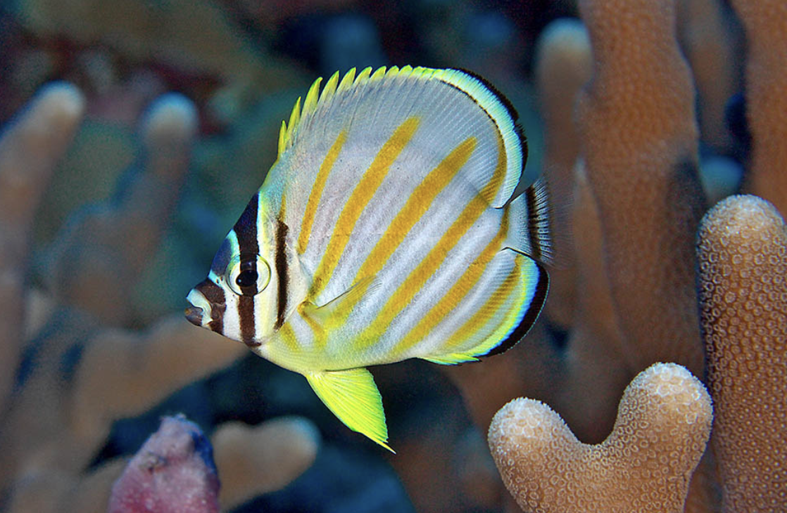
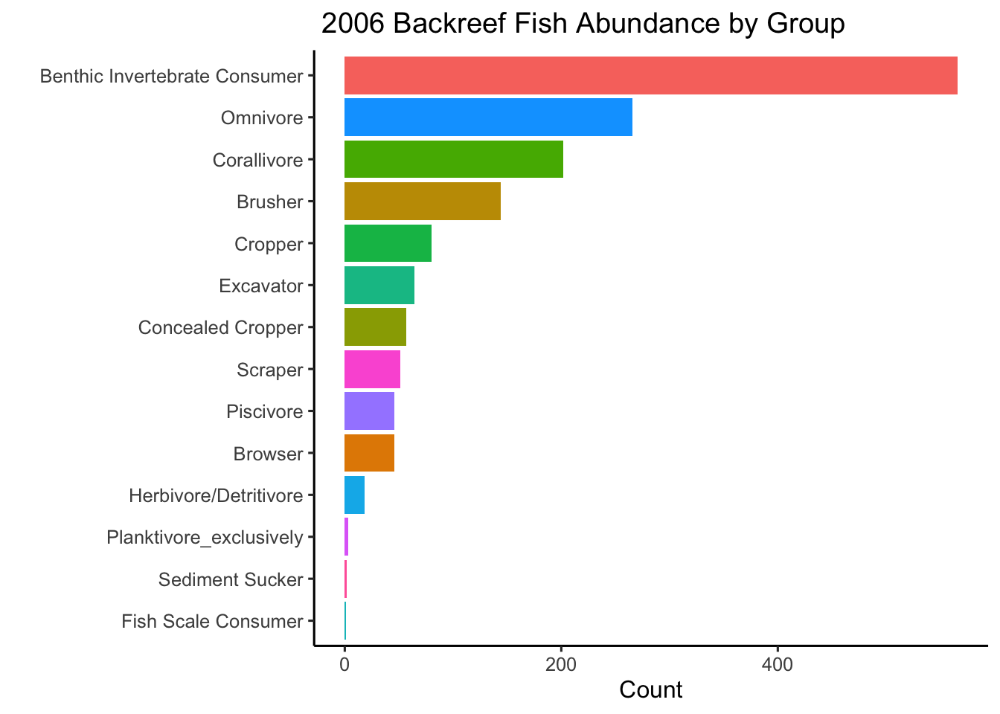
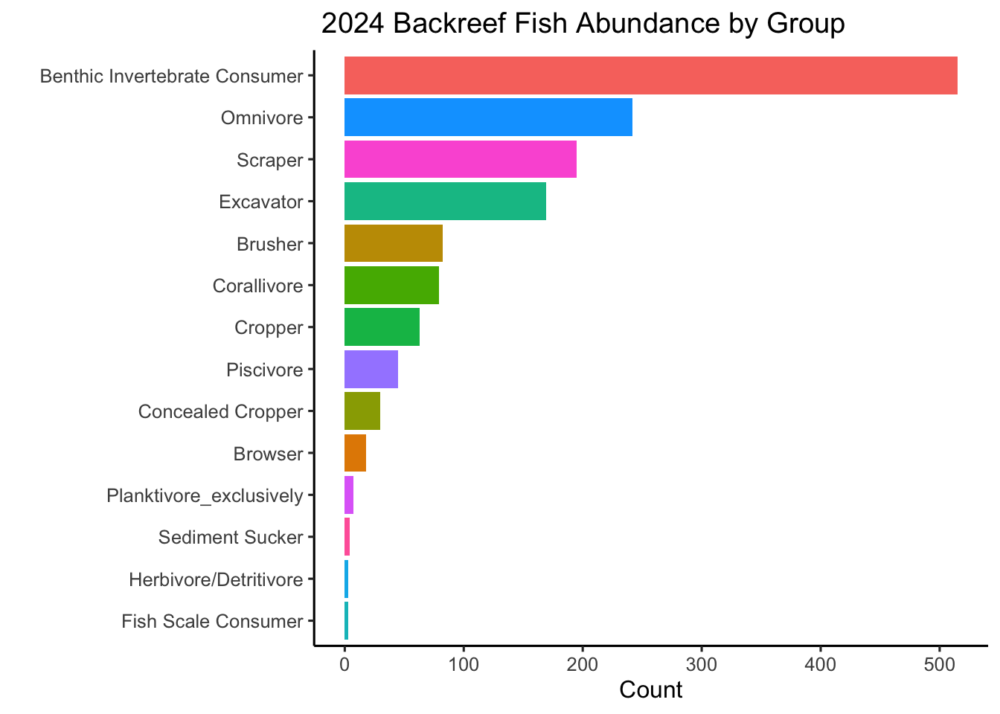
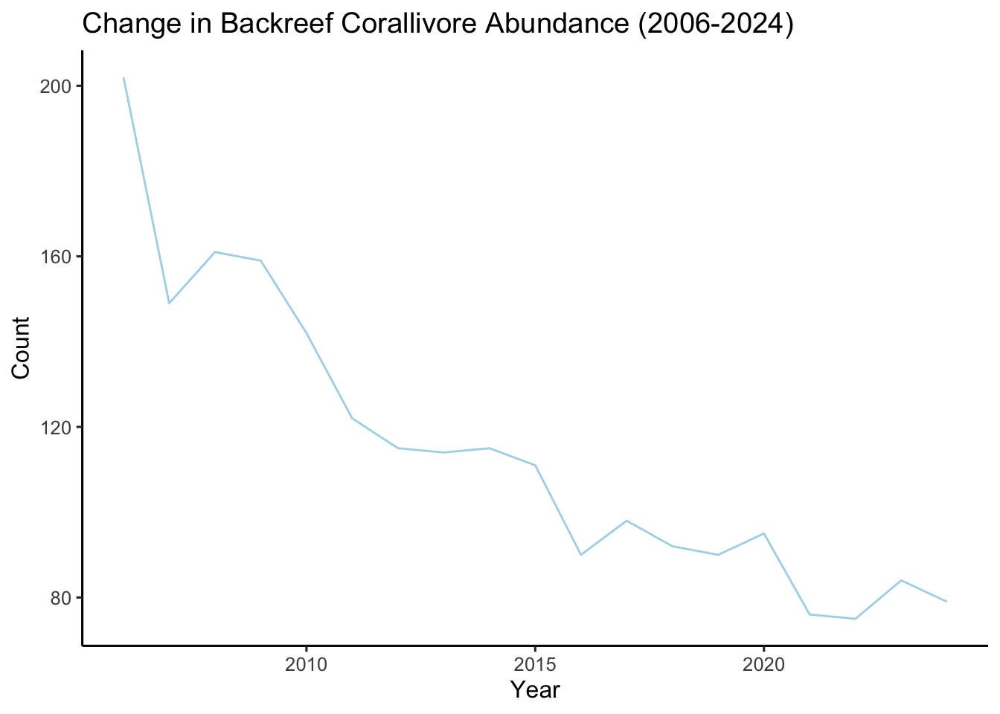
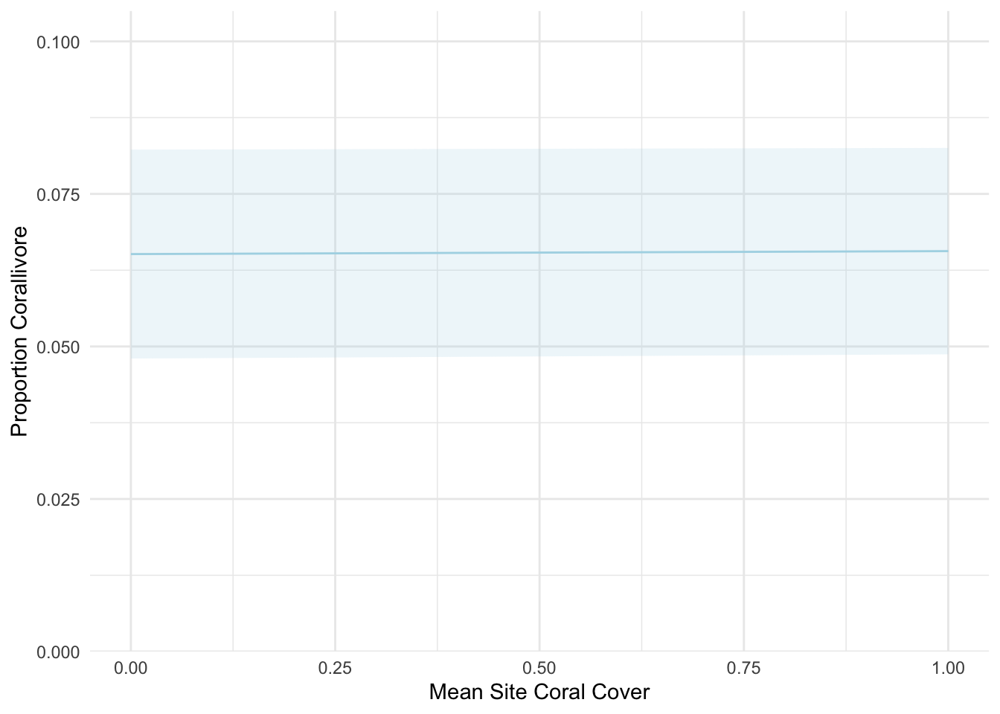

Is there a relationship between decreasing coral cover and corallivore abundance in backreef sites around Mo’orea, French Polynesia?
Coral reefs around the islands of Moʻorea are threatened by a variety of anthropogenic and natural stressors, such as cyclone activity and outbreaks of the predatory sea star (Acanthaster planci), which feeds on coral tissue.¹ In response to these stressors, many locations around the island have undergone phase shifts in their benthic composition, transforming coral‑dominated communities into macroalgae‑dominated ones.² In particular, the back‑reefs have been heavily transformed by the presence of Turbinaria ornata, a well‑defended and persistent alga.³ I am interested in whether the resulting fish communities have changed as a result, especially the abundance of corallivores that feed primarily on scleractinian corals. In the following analysis, I will assess the impact of changing coral cover on corallivore populations.
The analysis involves two datasets, both from the Moʻorea Coral Reef Long‑Term Ecological Research (LTER) site.
Long‑term Population and Community Dynamics: Fishes (ongoing since 2005)⁴ – describes species abundance and estimated size distributions (total body length to the greatest precision possible) of fishes surveyed as part of MCR LTER’s annual reef‑fish monitoring program. This dataset will be filtered to back‑reef sites and the fine trophic level of corallivore. Corallivores were not recorded group in the first year of the survey so 2005 will be excluded.
Long‑term Community Dynamics: Backreef (Lagoon) Corals Annual Survey (ongoing since 2005)⁵ – describes the percentage cover of all stony corals (Scleractinia, pooled among genera) and other major groups, analyzed from 0.5 × 0.5 m photographic quadrats at the back‑reef habitat of the Moorea Coral Reef LTER, French Polynesia.
Code
# Read in fish and coral data
fish <- read_csv(here("blogposts", "corallivores", "data", "MCR_LTER_Annual_Fish_Survey_20250324.csv")) |>
janitor::clean_names()
coral_cover <- read_csv(here("blogposts", "corallivores", "data", "MCR_LTER_Coral_Cover_Backreef_Long_20250429.csv")) |>
janitor::clean_names()Change in Corallivore Abundance through time
Code
fish_2006 <- fish |>
group_by(fine_trophic, habitat) |>
filter(fine_trophic != "na")|>
filter(year == "2006") |>
filter(habitat == "Backreef") |>
summarise(n = n()) |>
mutate(total_number = n) |>
arrange(desc(total_number))
fish_2006_plot <- ggplot(fish_2006, aes(x = total_number,
y = reorder(fine_trophic, +total_number),
fill = fine_trophic)) +
geom_col() +
ylab(" ") +
xlab("Count") +
labs(title = " 2006 Backreef Fish Abundance by Group",
x = "Count") +
theme(legend.position = "none")
fish_2024 <- fish |>
group_by(fine_trophic, habitat) |>
filter(fine_trophic != "na")|>
filter(year == "2024") |>
filter(habitat == "Backreef") |>
summarise(n = n()) |>
mutate(total_number = n) |>
arrange(desc(total_number))
fish_2024_plot <- ggplot(fish_2024, aes(x = total_number,
y = reorder(fine_trophic, +total_number),
fill = fine_trophic)) +
geom_col() +
ylab(" ") +
xlab("Count") +
labs(title = " 2024 Backreef Fish Abundance by Group",
x = "Count") +
theme(legend.position = "none")

Corallivores fell from the third‑most abundant group in the first survey year (202 individuals) to the sixth‑most abundant group in the most recent sampling year (79 individuals) at the LTER back‑reef sites. The figure below shows the decline of observed fish from 2006 to 2024.
Code
corallivores_through_years <- fish |>
group_by(year) |>
filter(habitat == "Backreef") |>
filter(fine_trophic == "Corallivore") |>
summarise(n = n()) |>
mutate(total_number = n)
corallivore_plot <- ggplot(corallivores_through_years,
aes(x = year,
y = total_number)) +
geom_line(color = "lightblue") +
labs(x = "Year",
y = "Count",
title = "Change in Backreef Corallivore Abundance (2006-2024)")
corallivore_plot
Relationships and Causal Relationships

The three predictor variables included in this model are LTER site, year, and mean coral cover of transects within a site. The site and year should determine coral cover, which in turn should determine the response variable: the proportion of corallivores in the fish community.
Statistical model
\[ \begin{align} \text{Proportion Corallivores} &\sim Beta(\mu, \phi) \\ logit(\mu) &= \beta_0 + \beta_1 \text{Mean Site Coral Cover} + \beta_2 \text{Site} + \beta_3 \text{Year} \end{align} \] Beta regression models are commonly used to model variables that return values between 0 and 1. The dependent variable is assumed to follow a beta distribution, and its expected value is linked to the explanatory variables by a linear combination of coefficients passed through a chosen link function.⁶
The standard beta‑distribution parameters are α and β. For regression it is convenient to re‑parameterize them in terms of:
α = μ*ϕ
β = (1- μ)*ϕ
where:
μ – the mean of the beta distribution (must lie in be between 0 and 1).
ϕ – the precision parameter; larger ϕ yields lower variance, while smaller ϕ produces higher variance.
Because μ needs to be between 0 and 1, a transformation using the logit link is necessary to convert values to that range.
Simulate data according to model assumptions / Model fit to simulated data recovers the parameters
The following parameters will be assigned these values:
β0 = .5
β1 = 1
ϕ = 5
We should recover them after the following data simulation and model fit.
Code
# Sample size for simulation
n <- 5000
# Precision parameter
phi <- 5
# Intercept
beta0 <- .5
# Predictor coefficient
beta1 <- 1
# Generate random numbers from a normal distribution of sample size
predictor <- rnorm(n)
# Logit mu regression line
logit_mu <- beta0 + beta1 * predictor
# plogis() converts logit_mu to mu which will be bound between 0 and 1
mu <- plogis(logit_mu)
# Alpha shape of beta distribution or shape 1
alpha <- mu * phi
# Beta shape of beta distribution or shape 2
beta <- (1 - mu) * phi
# Simulate response variable with sample size n and two shape parameters using rbeta()
response <- rbeta(n, alpha, beta)
# Fit beta regression model to simulated data
model <- betareg(response ~ predictor)
# Obatain parameters: b0, b1, and phi
summary(model)
Call:
betareg(formula = response ~ predictor)
Quantile residuals:
Min 1Q Median 3Q Max
-3.4755 -0.6639 0.0159 0.6858 4.0502
Coefficients (mean model with logit link):
Estimate Std. Error z value Pr(>|z|)
(Intercept) 0.49657 0.01237 40.15 <2e-16 ***
predictor 1.00919 0.01370 73.64 <2e-16 ***
Phi coefficients (precision model with identity link):
Estimate Std. Error z value Pr(>|z|)
(phi) 4.97625 0.09528 52.23 <2e-16 ***
---
Signif. codes: 0 '***' 0.001 '**' 0.01 '*' 0.05 '.' 0.1 ' ' 1
Type of estimator: ML (maximum likelihood)
Log-likelihood: 2611 on 3 Df
Pseudo R-squared: 0.5095
Number of iterations: 12 (BFGS) + 2 (Fisher scoring) The summary returned the following:
Intercept (β0): 0.49657
predictor (β1): 1.00919
phi(ϕ): 4.97625
All values were significant and extremely close to the originally assigned numbers above.
Inference
Alternative Hypothesis: There is a positive relationship between mean site coral cover and proportion corallivore in the backreef fish community.
Null Hypothesis : There is no relationship between mean site coral cover and proportion corallivore in the backreef fish community.
First, process the data to create a dataframe that includes, for each LTER back‑reef site and each year, the proportion of corallivores and the mean coral cover of the monitored transects.
Code
# Clean fish data
corallivore <- fish |>
filter(habitat == "Backreef") |>
group_by(year, site ) |>
summarise(proportion_corallivore = mean(fine_trophic == "Corallivore", na.rm = TRUE))
# Clean coral data
coral_cover <- coral_cover |>
filter(benthic_category == "coral") |>
group_by(year, site) |>
summarise(mean_site_coral_cover = mean(percent_cover))
# Join two dataframes together by year and site
full_data_frame <- left_join(coral_cover, corallivore, join_by(year, site))
# Drop 2005 (no Corallivore observations) and convert year to a factor
full_data_frame <- full_data_frame |>
filter(year != 2005) |>
mutate(year = as.factor(year))Plot
Code
site_labels <- c(
"LTER_1" = "LTER 1",
"LTER_2" = "LTER 2",
"LTER_3" = "LTER 3",
"LTER_4" = "LTER 4",
"LTER_5" = "LTER 5",
"LTER_6" = "LTER 6")
ggplot(full_data_frame,
aes(x = mean_site_coral_cover,
y = proportion_corallivore)) +
geom_point() +
facet_wrap("site",labeller = labeller(site = site_labels)) +
labs(x = "Mean Site Coral Cover (%)",
y = "Proportion Corallivore") +
geom_smooth(method = "glm")
Fit Beta Regression Model to Data and Interpret Coefficents and Confidence Intervals
Code
# Fit beta regression model to data using glmmTMB()
corallivore_model <- glmmTMB(proportion_corallivore ~ mean_site_coral_cover + site + year,
data = full_data_frame,
family = beta_family(link = "logit"))
# Create grid of with percentage values of coral cover from 0 to 1. Reference year is 2006, reference site is LTER 1
pred_grid <- expand_grid(mean_site_coral_cover = seq(0,1, by = 0.01)) |>
mutate(site = "LTER_1",
year = 2006)
# Make predictions with corallivore model along with standard error of each response value
pred_se <- predict(
corallivore_model,
newdata = pred_grid,
type = "response",
se.fit = TRUE
)
# Combine predictions with upper/lower bounds of confidence intervals
prediction_final <- pred_grid |>
mutate(
fit = pred_se$fit,
se = pred_se$se.fit,
lower = fit - 1.96 * se,
upper = fit + 1.96 * se
)
# Plot expected response of model and CIs
ggplot(prediction_final, aes(x = mean_site_coral_cover, y = fit)) +
geom_line(colour = "lightblue") +
geom_ribbon(aes(ymin = lower, ymax = upper),
fill = "lightblue", alpha = 0.2) +
scale_y_continuous(limits = c(0, 0.10), # y‑axis from 0 to 0.10
expand = expansion(mult = c(0, 0.05))) +
labs(
x = "Mean Site Coral Cover",
y = "Proportion Corallivore"
) +
theme_minimal()
Code
summary(corallivore_model) Family: beta ( logit )
Formula: proportion_corallivore ~ mean_site_coral_cover + site + year
Data: full_data_frame
AIC BIC logLik -2*log(L) df.resid
-549.3 -478.2 300.7 -601.3 88
Dispersion parameter for beta family (): 215
Conditional model:
Estimate Std. Error z value Pr(>|z|)
(Intercept) -2.663837 0.143435 -18.572 < 2e-16 ***
mean_site_coral_cover 0.007935 0.004049 1.960 0.050033 .
siteLTER_2 0.368329 0.101031 3.646 0.000267 ***
siteLTER_3 0.900155 0.097173 9.263 < 2e-16 ***
siteLTER_4 0.631287 0.119136 5.299 1.17e-07 ***
siteLTER_5 0.634315 0.097816 6.485 8.89e-11 ***
siteLTER_6 0.686804 0.101202 6.786 1.15e-11 ***
year2007 -0.446857 0.125842 -3.551 0.000384 ***
year2008 -0.213730 0.119491 -1.789 0.073670 .
year2009 -0.381382 0.123695 -3.083 0.002048 **
year2010 -0.385928 0.124108 -3.110 0.001873 **
year2011 -0.350745 0.124731 -2.812 0.004923 **
year2012 -0.596791 0.137716 -4.333 1.47e-05 ***
year2013 -0.676107 0.139621 -4.842 1.28e-06 ***
year2014 -0.646465 0.142543 -4.535 5.75e-06 ***
year2015 -0.473822 0.145953 -3.246 0.001169 **
year2016 -0.692005 0.150520 -4.597 4.28e-06 ***
year2017 -0.729215 0.144915 -5.032 4.85e-07 ***
year2018 -0.677354 0.144952 -4.673 2.97e-06 ***
year2019 -0.714745 0.147148 -4.857 1.19e-06 ***
year2020 -0.556063 0.139810 -3.977 6.97e-05 ***
year2021 -0.866927 0.142815 -6.070 1.28e-09 ***
year2022 -0.793674 0.140008 -5.669 1.44e-08 ***
year2023 -0.819016 0.141004 -5.808 6.31e-09 ***
year2024 -1.017572 0.149744 -6.795 1.08e-11 ***
---
Signif. codes: 0 '***' 0.001 '**' 0.01 '*' 0.05 '.' 0.1 ' ' 1Hypothesis Test and Evidence Interpretation
Mean site coral cover showed a small positive association with the proportion of corallivores (β₁ = 0.0079, SE = 0.0040). The 95% confidence interval ranged from approximately zero to 0.016, indicating considerable uncertainty around the estimate and suggesting that the true effect, while unlikely to be negative, may be very weak. This relationship was not statistically significant (p = 0.050033), falling just above the conventional threshold for significance. Therefore we fail to reject the null hypothesis that there is no relationship between mean site coral cover and proportion corallivore in the backreef fish community. Because of potential site-level heterogeneity, further analyses examining site-specific effects may help clarify how coral cover influences corallivore abundance in the backreefs of Mo’orea, French Polynesia.
References
Trapon, Mélanie L., Pratchett, Morgan S., Penin, Lucie, Comparative Effects of Different Disturbances in Coral Reef Habitats in Moorea, French Polynesia, Journal of Marine Sciences, 2011, 807625, 11 pages, 2011. https://doi.org/10.1155/2011/807625
Adam TC, Schmitt RJ, Holbrook SJ, Brooks AJ, Edmunds PJ, Carpenter RC, et al. (2011) Herbivory, Connectivity, and Ecosystem Resilience: Response of a Coral Reef to a Large-Scale Perturbation. PLoS ONE 6(8): e23717. https://doi.org/10.1371/journal.pone.0023717
Bittick, S.J., Bilotti, N.D., Peterson, H.A. et al. Turbinaria ornata as an herbivory refuge for associate algae. Mar Biol 157, 317–323 (2010). https://doi.org/10.1007/s00227-009-1319-6
Moorea Coral Reef LTER and A. Brooks. 2025. MCR LTER: Coral Reef: Long-term Population and Community Dynamics: Fishes, ongoing since 2005 ver 64. Environmental Data Initiative. https://doi.org/10.6073/pasta/22e7873fb5e4849bad587559f85a1030 (Accessed 2025-12-11).
Moorea Coral Reef LTER and P. Edmunds. 2025. MCR LTER: Coral Reef: Long-term Community Dynamics: Backreef (Lagoon) Corals Annual Survey, ongoing since 2005 ver 14. Environmental Data Initiative. https://doi.org/10.6073/pasta/04eb85fb55df96730862f6136dbbee05 (Accessed 2025-12-11).
Cribari-Neto, F., & Zeileis, A. (2010). Beta Regression in R. Journal of Statistical Software, 34(2), 1–24. https://doi.org/10.18637/jss.v034.i02
Citation
BibTeX citation:
@online{sandoval,
author = {Sandoval, Joaquin},
title = {Mo’orea {Corallivores}},
url = {https://sandovaljoaquin.github.io/blogposts/corallivores},
langid = {en}
}
For attribution, please cite this work as:
Sandoval, Joaquin. n.d. “Mo’orea Corallivores.” https://sandovaljoaquin.github.io/blogposts/corallivores.